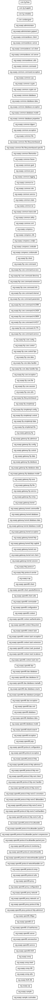

The Waarp All project is the new All in one Waarp modules project.
See: Description

| Package | Description |
|---|---|
| org.waarp.common.digest |
Classes implementing digests support (MD2, MD5, SHA1, SHA-256/384/512, CRC32,
ADLER32)
MD5 can be implemented through Fast MD5 implementation, but can be reverted to JVM native digest also. |
| Package | Description |
|---|---|
| org.waarp.common.command |
Global classes that store all informations on implemented commands,
arguments, reply codes.
|
| org.waarp.common.command.exception |
FTP like Exception related to commands
|
| org.waarp.common.file |
Classes implementing File, Directory, Authentication and Session Interfaces
|
| org.waarp.common.file.filesystembased |
Classes implementing FileInterface and Directory according to a filesystem
implementation
|
| org.waarp.common.file.filesystembased.specific |
Classes implementing specificity of JDK or Apache Commons IO related for
Filesystem implementation
|
| org.waarp.common.filemonitor |
This package would like to propose a JSE 6 compatible way to scan a directory
for new, deleted and changed
files, in order to allow some functions like pooling a directory before
actions.
|
| Package | Description |
|---|---|
| org.waarp.common.crypto |
Classes implementing Encryption for Password support or for File Encryption
AES is the best compromise in term of security and efficiency.
|
| org.waarp.common.crypto.ssl |
Classes implementing SSL support for Netty
To generate the stores for Waarp for instance, you need to create 2 JKS
keyStore.
|
| Package | Description |
|---|---|
| org.waarp.common.database |
Classes implementing Database access
|
| org.waarp.common.database.data |
Classes implementing Database Data model
|
| org.waarp.common.database.exception |
Classes implementing Database Exceptions
|
| org.waarp.common.database.model |
Classes implementing Database Model (H2, Oracle, PostgreSQL, MySQL, MariaDB)
|
| org.waarp.common.database.properties |
Classes implementing Database Model (H2, Oracle, PostgreSQL, MySQL, MariaDB)
|
| Package | Description |
|---|---|
| org.waarp.common.cpu |
Classes implementing CPU Management
|
| org.waarp.common.guid |
Classes implementing GUID
|
| org.waarp.common.role |
Package for Role management within Waarp products
|
| org.waarp.common.state |
Classes implementing basic Finite State Machine
|
| Package | Description |
|---|---|
| org.waarp.common.json |
JSON support package
|
| org.waarp.common.lru |
Classes implementing LRU Utilities
Based on work from Damian Momot at http://code.google.com/p/simplelrucache/
|
| org.waarp.common.service |
Interface for Apache Daemon tool to run as a Service (Windows or Unix) one
program
|
| org.waarp.common.tar |
Classes implementing Tar and Zip facility
|
| org.waarp.common.transcode |
Transcode packet that will help to transcode file from one charset to another
|
| org.waarp.common.utility |
Classes implementing Some String and File facility
|
| org.waarp.common.xml |
Classes implementing XML facility
|
| Package | Description |
|---|---|
| org.waarp.common.exception |
Classes implementing internal exceptions
|
| org.waarp.common.future |
Classes implementing Future
|
| org.waarp.common.logging |
Classes implementing logging facility
|
| Package | Description |
|---|---|
| org.waarp.commandexec.client |
Classes implementing LocalExec Client part without SSL link
|
| org.waarp.commandexec.server |
Classes implementing LocalExec Server part without SSL link
|
| org.waarp.commandexec.ssl.client |
Classes implementing LocalExec Client part with SSL link
|
| org.waarp.commandexec.ssl.server |
Classes implementing LocalExec Server part with SSL link
|
| org.waarp.commandexec.utils |
Classes implementing Utility part as the LocalExecResult object
|
| Package | Description |
|---|---|
| org.waarp.snmp |
Classes implementing Main functionalities to be used by Goldengate Projects
|
| org.waarp.snmp.interf |
Interfaces to be implemented by Goldengate Projects
|
| org.waarp.snmp.r66 |
Base class for OpenR66 MIB implementation to be used by OpenR66 Project
|
| org.waarp.snmp.utils |
Utility Classes used by SNMP support
|
| Package | Description |
|---|---|
| org.waarp.thrift.r66 |
| Package | Description |
|---|---|
| org.waarp.uip |
| Package | Description |
|---|---|
| org.waarp.ftp.core.command |
Global classes that store all informations on implemented commands,
arguments, reply codes.
|
| org.waarp.ftp.core.command.access |
FTP Access related command
|
| org.waarp.ftp.core.command.directory |
FTP Directory related commands
|
| org.waarp.ftp.core.command.extension |
FTP non standard Extensions related command
|
| org.waarp.ftp.core.command.info |
FTP Informational related command
|
| org.waarp.ftp.core.command.internal |
FTP Internal related command
|
| org.waarp.ftp.core.command.parameter |
FTP Parameter related command
|
| org.waarp.ftp.core.command.rfc2389 |
FTP RFC 2389 related command
|
| org.waarp.ftp.core.command.rfc2428 |
FTP RFC 2428 related command
|
| org.waarp.ftp.core.command.rfc3659 |
FTP RFC 3659 related command
|
| org.waarp.ftp.core.command.rfc4217 |
RFC 4217 on securing FTP with TLS through commands
|
| org.waarp.ftp.core.command.rfc775 |
FTP RFC 775 related command
|
| org.waarp.ftp.core.command.service |
FTP Service (transfer) related command
|
| org.waarp.ftp.core.config |
Classes implementing configuration
|
| org.waarp.ftp.core.control |
Classes implementing Control connections.
|
| org.waarp.ftp.core.control.ftps |
This module is for FTPS support as native SSL/TLS on port 990 similar to RFC
2818.
|
| org.waarp.ftp.core.data |
Classes implementing Data and Transfer status
When a transfer should occur, here are the steps: The connection is prepared through a PORT or PASV command. |
| org.waarp.ftp.core.data.handler |
Classes implementing Data connections
The internal logic is the following: When a connection is opened for data network: It first tries to find the corresponding session setup from the control connection. |
| org.waarp.ftp.core.data.handler.ftps |
This module is for FTPS support as native SSL/TLS on port 989 similar to RFC
2818.
|
| org.waarp.ftp.core.exception |
Classes implementing internal exceptions
|
| org.waarp.ftp.core.file |
Interfaces for FtpFile, FtpDir and FtpAuth as specific FTP extension of
interfaces FileInterface,
DirInterface and AuthInterface
|
| org.waarp.ftp.core.session |
Classes implementing session
|
| org.waarp.ftp.core.utils |
Classes implementing utilities functions
|
| Package | Description |
|---|---|
| org.waarp.ftp.filesystembased |
Classes implementing File, Directory and Authentication according to a
filesystem implementation for FTP
|
| Package | Description |
|---|---|
| org.waarp.ftp.simpleimpl |
Main class for the simple FTP server example based on Filesystem and simple
authentication.
|
| org.waarp.ftp.simpleimpl.config |
Simple configuration example.
|
| org.waarp.ftp.simpleimpl.control |
Simple FTP server example of control business.
|
| org.waarp.ftp.simpleimpl.data |
Simple FTP server example of data business.
|
| org.waarp.ftp.simpleimpl.file |
Filesystem based implementation example of File, Dir, Auth and SimpleAuth.
|
| Package | Description |
|---|---|
| org.waarp.ftp.client |
Main class for the FTP Client for R66.
|
| Package | Description |
|---|---|
| org.waarp.gateway.kernel | |
| org.waarp.gateway.kernel.commonfile | |
| org.waarp.gateway.kernel.database | |
| org.waarp.gateway.kernel.database.data |
Classes implementing Database Data model
|
| org.waarp.gateway.kernel.database.model |
Classes implementing Database Model (H2, Oracle, PostgreSQL, MySQL)
|
| org.waarp.gateway.kernel.exception | |
| org.waarp.gateway.kernel.http | |
| org.waarp.gateway.kernel.http.saplink |
Sap Link Archiver
|
| org.waarp.gateway.kernel.rest | |
| org.waarp.gateway.kernel.rest.client |
Package for REST Http client support
|
| org.waarp.gateway.kernel.session |
| Package | Description |
|---|---|
| org.waarp.openr66.server |
Classes implementing Server startup main class or utility classes
|
| org.waarp.openr66.serveraction |
Integrate remote actions on R66 servers
|
| Package | Description |
|---|---|
| org.waarp.openr66.client |
Classes implementing Clients
|
| org.waarp.openr66.client.spooledService |
This package contains helper to setup a SpooledDirectory as a service using
Apache Service Daemons tool.
|
| org.waarp.openr66.client.utils |
Package that contains helper for Clients
|
| Package | Description |
|---|---|
| org.waarp.openr66.exception | |
| org.waarp.openr66.protocol.configuration |
Class implementing Configuration
|
| org.waarp.openr66.protocol.exception |
Classes implementing Exceptions
|
| org.waarp.openr66.protocol.http |
Classes implementing HTTP information support
|
| org.waarp.openr66.protocol.http.adminssl |
Classes implementing HTTPS Administration support
|
| org.waarp.openr66.protocol.http.rest |
Http Rest R66 interface
|
| org.waarp.openr66.protocol.http.rest.client |
R66 REST HTTP Client package
|
| org.waarp.openr66.protocol.http.rest.handler |
Http Rest method handlers for R66
|
| org.waarp.openr66.protocol.http.restv2 |
This is the root package of the REST API version 2 code.
|
| org.waarp.openr66.protocol.http.restv2.converters |
This package regroups the different utility classes used to convert between
database objects and their
representations as
ObjectNode. |
| org.waarp.openr66.protocol.http.restv2.dbhandlers |
This package contains all the handlers processing the REST requests.
|
| org.waarp.openr66.protocol.http.restv2.errors |
This package contains the code handling user input errors in the REST API.
|
| org.waarp.openr66.protocol.http.restv2.resthandlers |
This package regroups all the general purpose Netty
ChannelHandlers
of the REST API. |
| org.waarp.openr66.protocol.http.restv2.utils |
A series of utility classes for the RESTv2 handlers.
|
| org.waarp.openr66.protocol.localhandler |
Classes implementing LocalHandlers (real work)
|
| org.waarp.openr66.protocol.localhandler.packet |
Classes implementing Packet for Local Handlers
|
| org.waarp.openr66.protocol.localhandler.packet.json | |
| org.waarp.openr66.protocol.networkhandler |
Classes implementing Network Handler (multiplexing local handlers)
|
| org.waarp.openr66.protocol.networkhandler.packet |
Classes implementing Packet for Network Handler
|
| org.waarp.openr66.protocol.networkhandler.ssl |
Classes implementing Network SSL Handler (multiplexing local handlers)
|
| org.waarp.openr66.protocol.snmp |
Classes implementing SNMP elements for OpenR66
|
| org.waarp.openr66.protocol.utils |
Classes implementing Utilities
|
| org.waarp.openr66.thrift |
Thrift Package that can be activated to allow Thrift clients interactions
|
| Package | Description |
|---|---|
| org.waarp.openr66.dao | |
| org.waarp.openr66.dao.database | |
| org.waarp.openr66.dao.database.h2 | |
| org.waarp.openr66.dao.database.mariadb | |
| org.waarp.openr66.dao.database.oracle | |
| org.waarp.openr66.dao.database.postgres | |
| org.waarp.openr66.dao.exception | |
| org.waarp.openr66.dao.xml | |
| org.waarp.openr66.database |
Classes implementing Database access
|
| org.waarp.openr66.database.data |
Classes implementing Database Data model
|
| org.waarp.openr66.database.model |
Classes implementing Database Model (H2, Oracle, PostgreSQL, MySQL)
|
| org.waarp.openr66.database.properties | |
| org.waarp.openr66.pojo |
| Package | Description |
|---|---|
| org.waarp.openr66.configuration |
Classes implementing Configuration loading from database or files
|
| Package | Description |
|---|---|
| org.waarp.openr66.commander |
Classes implementing Commander, reader of database updates from clients
|
| org.waarp.openr66.context |
Classes implementing Session, Result and ErrorCode
|
| org.waarp.openr66.context.authentication |
Classes implementing Authentication
|
| org.waarp.openr66.context.filesystem |
Classes implementing Filesystem
|
| org.waarp.openr66.context.task |
Classes implementing Tasks for pre, post or error operations
Several kind of tasks exist in OpenR66:
LOG, MOVE, MOVERENAME, COPY, COPYRENAME, EXEC, EXECMOVE, LINKRENAME, TRANSFER, VALIDFILEPATH, DELETE Several tasks are possible to run before a transfer starts (pre action), after a transfer is finished correctly (post action) or after an error occurs (either in pre or post action or during transfer: error action). |
| org.waarp.openr66.context.task.exception |
Classes implementing Exceptions for Runner
|
| org.waarp.openr66.context.task.javatask | |
| org.waarp.openr66.context.task.localexec |
Classes implementing Execution of Commands through LocalExec Daemon
|
| org.waarp.openr66.context.task.test |
Package for an example of Java Task for ExecJava and for BusinessFactory
|
| Package | Description |
|---|---|
| org.waarp.openr66.service |
Interface for Apache Daemon tool to run as a Service
|
| Package | Description |
|---|---|
| org.waarp.gateway.ftp |
Main class for the Exec FTP server based on Filesystem and simple
authentication.
|
| org.waarp.gateway.ftp.adminssl |
Classes implementing HTTPS Administration support
|
| org.waarp.gateway.ftp.config |
Exec configuration.
|
| org.waarp.gateway.ftp.control |
Exec FTP server control business.
|
| org.waarp.gateway.ftp.data |
Exec FTP server data business.
|
| org.waarp.gateway.ftp.database |
Classes implementing Database access
|
| org.waarp.gateway.ftp.database.data |
Classes implementing Database Data model
|
| org.waarp.gateway.ftp.database.model |
Classes implementing Database Model (H2, Oracle, PostgreSQL, MySQL)
|
| org.waarp.gateway.ftp.exec |
Class for the real Exec for the Waarp Gateway.
|
| org.waarp.gateway.ftp.file |
Filesystem based implementation of File, Dir, Auth and SimpleAuth.
|
| org.waarp.gateway.ftp.service |
Interface for Apache Daemon tool to run as a Service
|
| org.waarp.gateway.ftp.snmp |
SNMP support classes.
|
| Package | Description |
|---|---|
| org.waarp.openr66.proxy |
Proxy package for R66 protocol
|
| org.waarp.openr66.proxy.configuration |
Specific configuration package
|
| org.waarp.openr66.proxy.network |
Network Package for Proxy R66
|
| org.waarp.openr66.proxy.network.ssl |
SSL proxy
|
| org.waarp.openr66.proxy.protocol.http |
Classes implementing HTTP information support
|
| org.waarp.openr66.proxy.protocol.http.adminssl |
Classes implementing HTTPS Administration support
|
| Package | Description |
|---|---|
| org.waarp.http.protocol | |
| org.waarp.http.protocol.servlet |
| Package | Description |
|---|---|
| org.waarp.icap |
| Package | Description |
|---|---|
| com.swtdesigner | |
| org.waarp.openr66.r66gui |
Adaptation to Administrator
|
| Package | Description |
|---|---|
| org.waarp.xample |
Extension of Xample for unification in Administrator
|
| org.waarp.xample.custnodes |
| Package | Description |
|---|---|
| com.fg.ftree | |
| com.fg.fxapplet | |
| com.fg.xmleditor |
| Package | Description |
|---|---|
| org.waarp.administrator | |
| org.waarp.administrator.guipwd |
Extension for Administrator
|
The Waarp All project is the new All in one Waarp modules project. It includes all mdules that were independants such as:
- WaarpDigest
- WaarpCommon
- WaarpExec
- WaarpSnmp
- WaarpThrift
- WaarpPassword
- WaarpFtp
- WaarpFtpClient
- WaarpGatewayKernel
- WaarpR66
- WaarpGatewayFtp
- WaarpProxyR66
- WaarpR66Gui
- WaarpXmlEditor
- WaarpAdministrator
Copyright © 2009–2020 Waarp. All rights reserved.